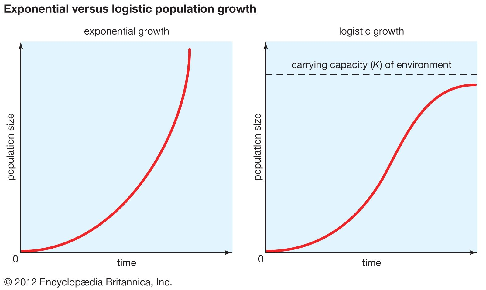

1.01 ^ 365 ≈ 37
If you ran just 1% faster each day for a year, you could run 37 times
faster. (100 mph!!!)
If you typed just 1% faster each day for a year, could type 37 times
faster. (1500 wpm!!!)
Of course this can't be done.
As a rule things inside yourself cannot be changed exponentially
without diminishing returns. That implies unlimited growth or decay.
A better model for internal change is:

External things can, like money or followers. They have ceilings
too, just very high ones.
This is probably one reason income inequality can be drastic.
There is a lot of matter internal (and external) to the system
that it wants to control. Once a good 'manager' of the stuff has
been found, the system keeps giving more to the manager.